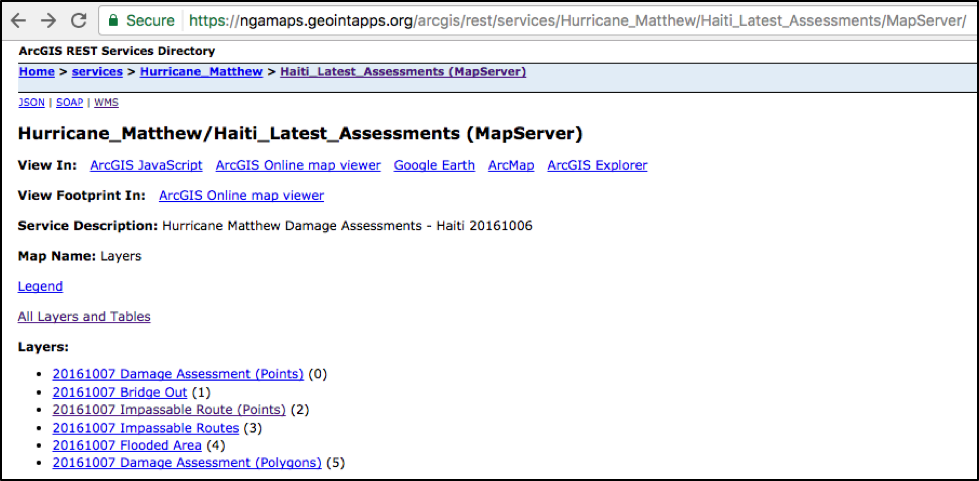
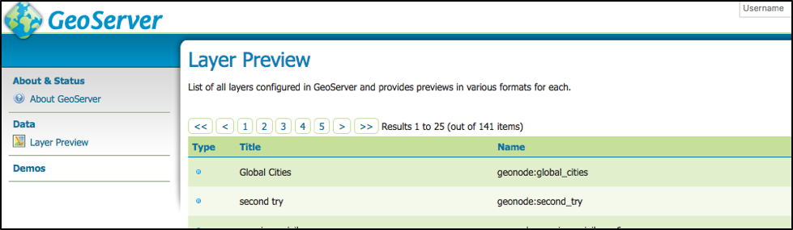
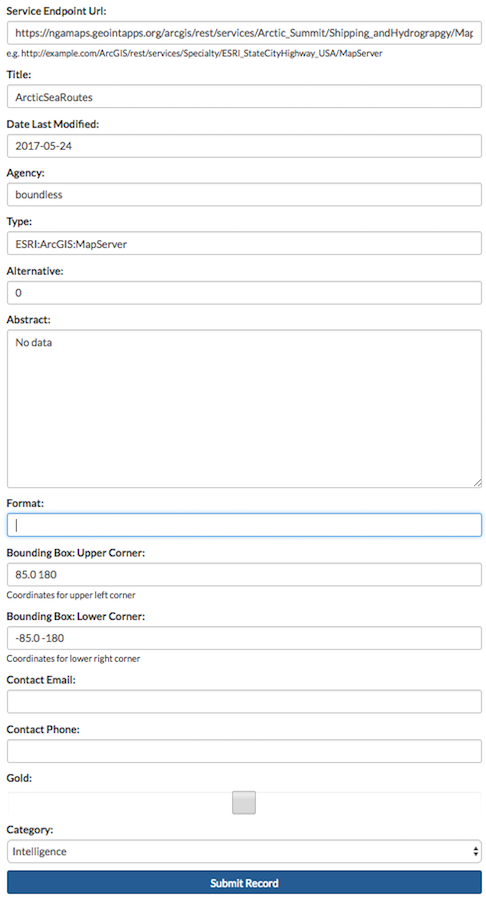

Administration¶
Working with Registry¶
In Exchange, there are two primary types of data that can be added to Registry, a service or a single layer. A service is two or more layers being added to the map at the same time, whereas a single layer is just an individual layer. The form is the same for either one, but you will need to have a relatively good understanding of your data in order to successfully insert your new record.
Currently, you can add the following services in Exchange:
- WMS - Web Map Service
- MapServer - ESRI Map Service
- ImageServer - ESRI Image Service
Add an individual record to CSW¶
Exchange users with administrator privileges are able to add CSW records through their Exchange webpage.
- Click on your user name in the toolbar. Select Registry from the drop-down menu to open the record form.

- Fill in the following information:
Source - This is the URL address for the endpoint you are trying to add.
- Geoserver Example:
- https://mapstory.org/geoserver/geonode/wms
- ESRI MapServer Example:
- https://ngamaps.geointapps.org/arcgis/rest/services/Hurricane_Matthew/Bahamas_Latest_Damage_Assessments/MapServer
- ESRI MapServer WMSserver Example:
- https://ngamaps.geointapps.org/arcgis/services/Hurricane_Matthew/Haiti_Latest_Assessments/MapServer/wmsserver
- ESRI ImageServer Example:
- https://gis.ngdc.noaa.gov/arcgis/rest/services/bag_hillshades/ImageServer
Title - The title should be related to the data, but should also be unique enough to find when performing a search for data.
Date Last Modified - This field is filled in by default, but can be edited to match what is true for the data.
Agency/Creator - Where did the information come from?
Type - The type field denotes what kind of data is being added.
For the services listed below, you would use the following information:
- ESRI map server - ESRI:ArcGIS:MapServer
- ESRI image server - ESRI:ArcGIS:ImageServer
- WMS Services - dataset
Alternative - An ESRI service will number each of the layers (starting with zero), and when adding data from a service, the alternative field points to the id individual layer to be pulled from that server. For GeoServer OGC services, the value for the Alternative field can be pulled from the layer name which is a string that does not contain spaces.
List of layers with ID’s for the MapServer. The layer ID for Bridge Out is ‘1’ as indicated by the value in the parenthesis.
Geoserver typically follows the format of <workspace>:<name>. The <name> portion is all that’s needed for the Alternative field.
Abstract - The abstract should provide a brief description of the data being added.
Format - This can vary depending on the kind of data being added. When registering a WMS service, format must be set to OGC:WMS.
Bounding Box coordinates - Upper Corner: The bounding box defaults to an area that will cover what is being added. It is recommended to leave the default settings (85.0 180, -85.0 -180) unless you have specific requirements.
Bounding Box- Lower Corner: Same as above.
Contact Email - Please add your email address here.
Contact Phone - Please add a contact phone number here.
Gold - Select this checkbox if the data is NGA-approved content.
Category – Select a category from the drop-down menu.

This is an example of a record for adding a WMS.
This is an example of a record for adding an ESRI Map Service.
- Click the Submit Record button to nominate record.
For additional examples of records that have been successfully added in Exchange, please check out: CSW Examples
Verify the record¶
To verify the record was successfully added to Registry you can search for it using the Exchange search field on the front page or use the Add Layer function from your map.